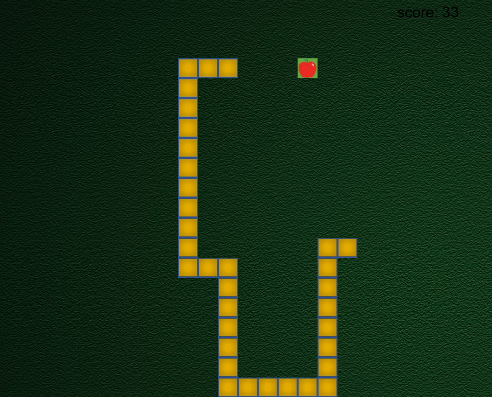
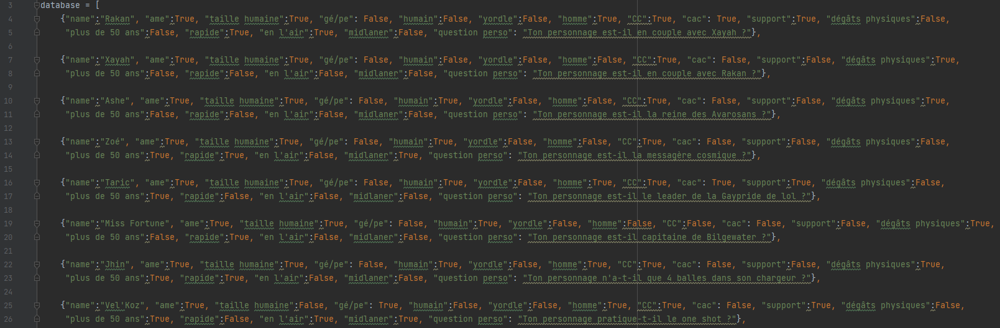

Les différentes tasks:
-Récupérer des sprites pour créer un monde.
-Créer des animations, un système de progression, un inventaire.
-Se familiariser avec des types d'algorithmes séquentiels.
Technologies : Game Maker Language
Projet 2 :
Snake
Les différentes tasks: 
- Implémentation de l'IHM (à partir de la bibliotèque pygame, j'ai exploiter le SDL pour développer l'aspect graphique du jeu).
-Créer un "Snake" qui se déplace et grandit, une actualisation automatique du background.
Tout en enregistrant la position de chaque portion de son corps.
-Créer un sytème de score, enregistrer des sons.
Technologies : Python, pygame
Les différentes tasks:
-Créer une database comprenant les caractéristiques d'un nombre donné
de personnages.
Pour chaque réponse le programme élimine les personnages qui ne correspondent pas.
-Exploitation de type de données Tableaux et Objets.
-Exploitation du format JSON pour gérer la persistante des données.
-Créer un système posant des questions "logiques".
Technologies : Python
Les différentes tasks:
-Intégration de template pour CV
-Création de page HTML
-Développement de script javascript
-Gestion mise en page avec CSS
Technologies : HTML5, CSS3, Javascript
Autres
J'ai développé beaucoup d'autres projets (personnels) qui sont essentiellement des tests ou des idées que j'ai concretisées.